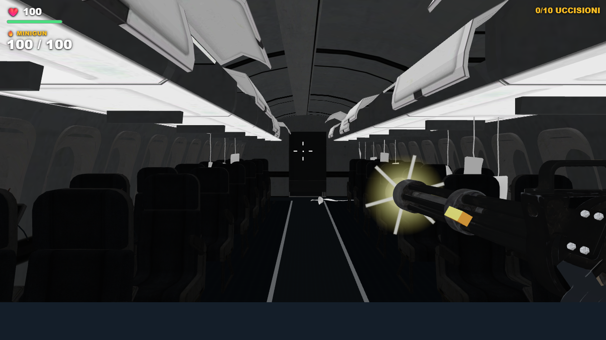
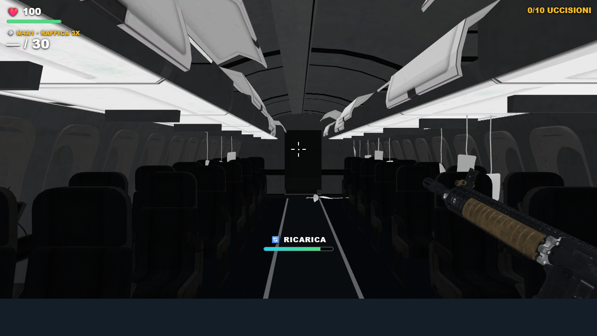
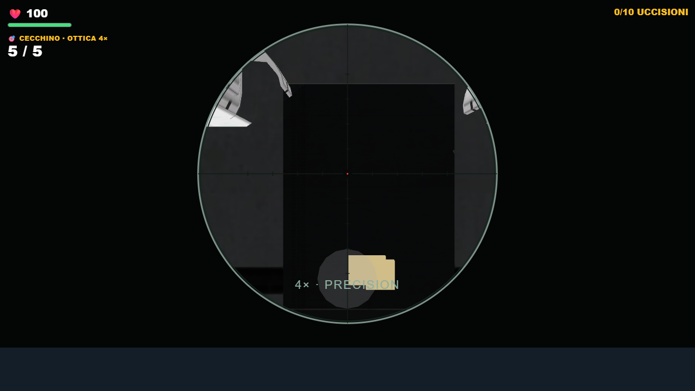
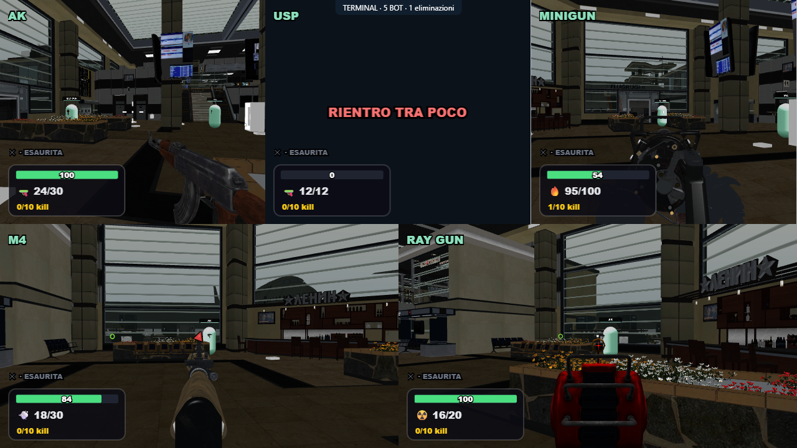

Sparatoria 3.0
Rinculo, ricariche, bossoli, impatti, bot e feedback delle eliminazioni. Sei armi attive e sola Ray Gun rossa. Danni e geometria conservati.
RTX 3050, 1280×720, cinque visuali a posizioni fisse, M4 con spari e ricariche: 58,4 FPS. Le scene con bot in movimento restano più variabili.
Apri l’anteprima locale con cinque bot · Note e verifiche

Minigun: rinculo breve, lampo e bossolo. Modello originale integro.
Ricarica procedurale visibile, munizioni confermate dall’host.
Ottica 4× conservata, nessuna lente opaca sul bersaglio.
Anteprima della simulazione con cinque bot su Terminal.